0. 总览：四篇专利的定位与关系
这四篇专利全部来自 NVIDIA，时间跨度 2019–2025（申请日），共同回答了同一个大问题的不同侧面：当一颗 GPGPU 的算力和显存被切分、被共享、被跨 die 扩展时，地址应该如何映射，才能既保证隔离（isolation）、又保证局部性（locality）、还兼顾利用率与功耗？
- US10909033B1（2019 年申请，2021 年授权，发明人 Kun Fang、James Van Dyke）解决的是地址映射的数学基础：strided（跨全部内存器件条带化）与 partition（垂直切分给不同租户）两类内存空间如何共存于同一套物理 DRAM 上，且边界干净、浪费最小。它是 MIG 内存隔离的底层使能技术。
- US20210157651A1（2021 年公开，Duluk 等 15 人）是 MIG（Multi-Instance GPU）的系统专利：把 PPU 切成若干 PPU Partition（slice 级硬分区），每个分区再划分 SMC Engine，DRAM 被划成 top / partitionable / bottom 三段，由 MMU + AMAP 完成带 swizzle 的地址隔离，配合 VASID 本地化实现故障隔离与迁移。
- US20250078199A1（2023 年申请，Wish Gandhi、Ze Long、Kun Fang）面向多 die（uGPU）统一内存 GPU：在保留统一虚拟寻址灵活性的同时，允许应用通过 PTE 里的一个 mode bit 选择 localized 映射，把数据和执行"绑"在同一个 uGPU 上，消除跨 die（C2C）访问的高延迟与 L2 双份缓存。这是地址 locality 的直接优化。
- US20260227917A1（2025 年申请，Venkatesan、Keller、Tambe）把同样的思路推进到片上 SRAM（global scratchpad）：读写请求自带 bank cluster size（1/2/4），地址按 cluster 内交织、cluster 间顺序的规则换算物理 bank；空闲 bank 可进入 retention/idle 低功耗态。Locality 在这里同时服务于带宽聚合与功耗。
1. US20210157651A1：虚拟化环境下把一颗处理器配置成多颗独立处理器（MIG 系统专利）
1.1 要解决的问题
传统 GPU 同一时刻只能按一个处理上下文（processing context）配置。多个 CPU 进程要同时卸载任务到 GPU 时，只能靠"time-slice + context switch"或者在一个 context 里派生 subcontext。这带来三个问题：
- 公平性：不同 subcontext 的 CPU 进程会不公平地挤占本应共享的 GPU 资源，一个进程可能拖死另一个；
- 隔离性：subcontext 之间缺乏硬件级隔离，一个出错会波及其余；
- 多租户：云场景下多个租户（VM / 容器）无法真正独享 GPU 的一部分。
这篇专利给出的答案是：把 PPU 在硬件边界上切成多个"fractionalized PPU"（PPU Partition），每个分区从功能上看就是一颗小 GPU，可独立复位、独立报错、独立调度，互不干扰。
1.2 核心概念体系
| 概念 | 含义 | 类比/备注 |
|---|---|---|
| PPU slice 610 | 最小切分单元：1 个 sys pipe（含 PBDMA、FECS、前端、SKED、CWD）+ 1 个 GPC + 一组 L2 slice + 对应 DRAM 部分 | 大致对应 MIG 的 "GPU slice" |
| PPU partition 600 | 若干 slice 的硬分区，功能上等价于整颗 PPU；分区间功能隔离、可独立复位 | MIG 的 "GPU Instance (GI)" |
| SMC engine 700 | 分区内部的"同时多上下文"引擎；每个 SMC engine 任一时刻跑一个 context，多个 SMC engine 并行跑多个 context | GI 内的 "Compute Instance (CI)" 的执行底座 |
| PPU memory partition 710 | 属于某分区的 L2 slice 组 + 对应 DRAM portion 822 | 内存侧隔离单元 |
| VEID / VASID | 虚拟引擎 ID / 虚拟地址空间 ID；本地编号（从 0 开始）映射到全局编号，便于迁移 | 见 1.5 节 |
| GFID | GPU Function ID（PF+VF 位），SR-IOV 语义，用于把错误路由到对应 VM 的 guest OS | — |
| swizID | "swizzle identifier"，一串位图，1 个 bit 对应一条边界选项（boundary option），置位=激活该边界 | 分区的"配置指纹"，见 1.4 节 |
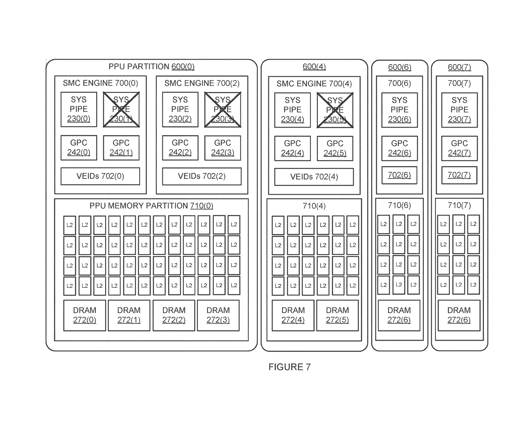
1.3 内存侧：DRAM 三段式划分与地址空间布局（地址隔离的核心）
DRAM 272（所有 slice 的显存总和）被划分为三段：
- Top section 810 与 Bottom section 830：从所有 DRAM 的顶部/底部"削"出来的 carve-out，供 hypervisor、device driver 等系统级实体使用（如 hypervisor 私有数据、安全数据），普通分区不可见；
- Partitionable section 820：中段，才是分给各 PPU partition 的部分，内部再切成 DRAM portion 822(i)，每个对应一个 memory partition 710(i)。
对应地，软件可见的一维系统物理地址空间（1D SPA space 850）被分为 top addresses 852、partitionable addresses 854（细分为各 address region 856(i)）、bottom addresses 858。其中：
- top/bottom 地址被 swizzle 到全部 L2 slice 上（伪随机交织），均衡占用所有 slice 的顶部/底部区域；
- partitionable 地址中，region 856(i) 只映射进分区 i 的 L2 slice 组和 DRAM portion —— SMC engine 只能访问本分区的 address region，从硬件上不可能越界。
容量由三个参数确定：M（DRAM 总量）、F（每个 L2 slice 属于 partitionable 段的大小）、W（每个 slice 属于 bottom 段的大小），T/P/B 由 M/F/W 推出。
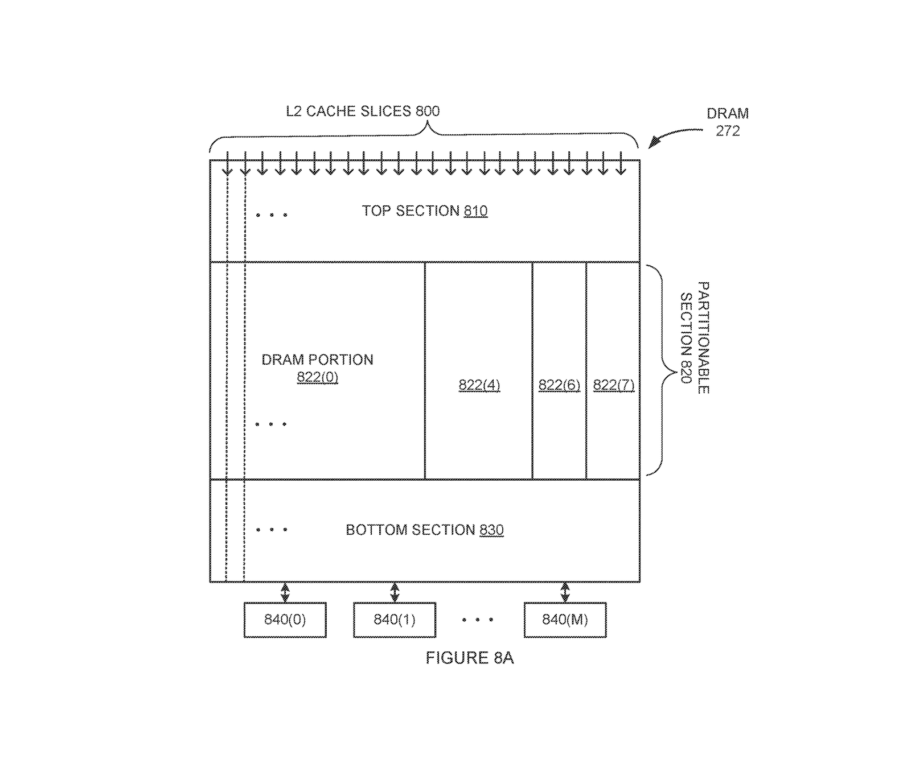
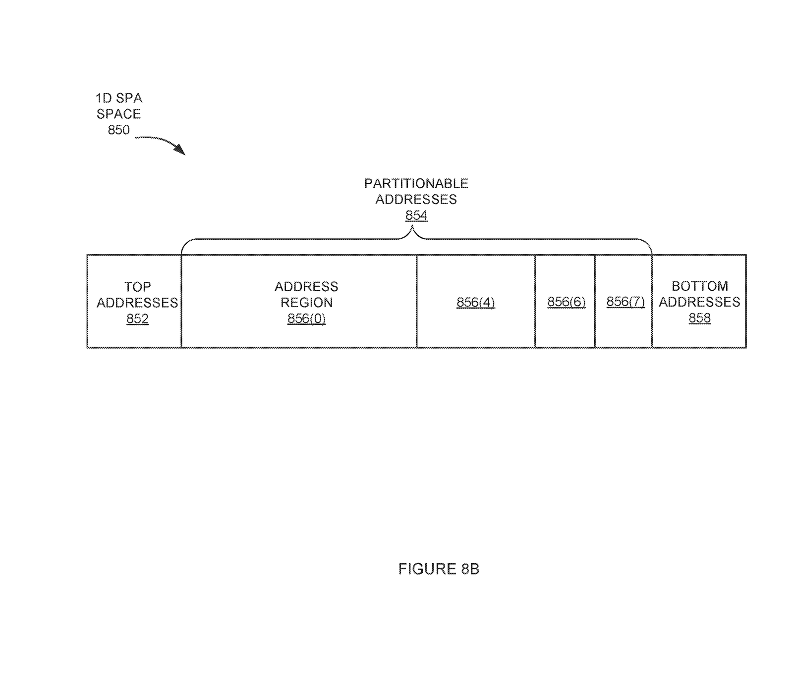
1.4 swizID：用一串位图同时描述"计算分区"和"内存分区"的边界
这是本专利最精巧的设计之一。分区配置表（FIG. 11）里预定义了 15 种 partition option（8 slice 的各种合法组合），每个 option 对应一个 11-bit swizID：
- swizID 的每一位对应一条 boundary option（计算侧的 1110 系列、DRAM 侧的 1900 系列），置 1 = 在该处激活隔离边界；
- bit 0 和 bit 10 恒为 1，永远激活 L2 的顶部/底部边界（top/bottom section 总是存在）；
- 管理员选定多个 partition option 后，hypervisor 把它们的 swizID 做 按位 OR，得到 configuration swizID，一次性激活所有边界。
以专利示例为例：选 option 1（slice 0–3）、5（slice 4–5）、13、14（各 1 slice），configuration swizID = 11110100011，对应 FIG. 20 里激活边界 1900(0)(1)(5)(7)(8)(9)(10)，把 partitionable section 切成 822(0)/(4)/(6)/(7) 四块。
同一套 swizID 还被 AMAP 复用为 memory access swizID（交织因子）：本地访存用 local swizID（由系统物理地址算出，把请求打散到本分区内的 L2 slice，防止 camping），系统内存/peer 访问用 remote swizID（由驱动/hypervisor 提供）。swizzle 在这里身兼两职：既做负载均衡（打散热点），又做隔离（把交织范围限制在分区边界内）。
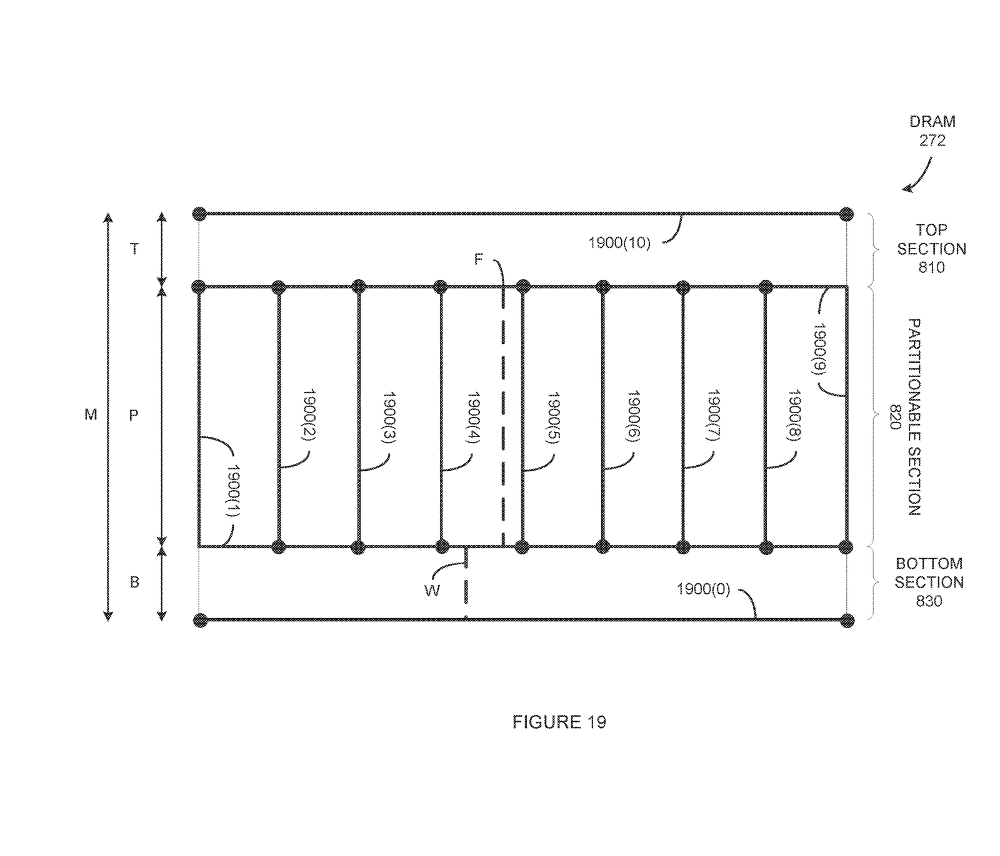
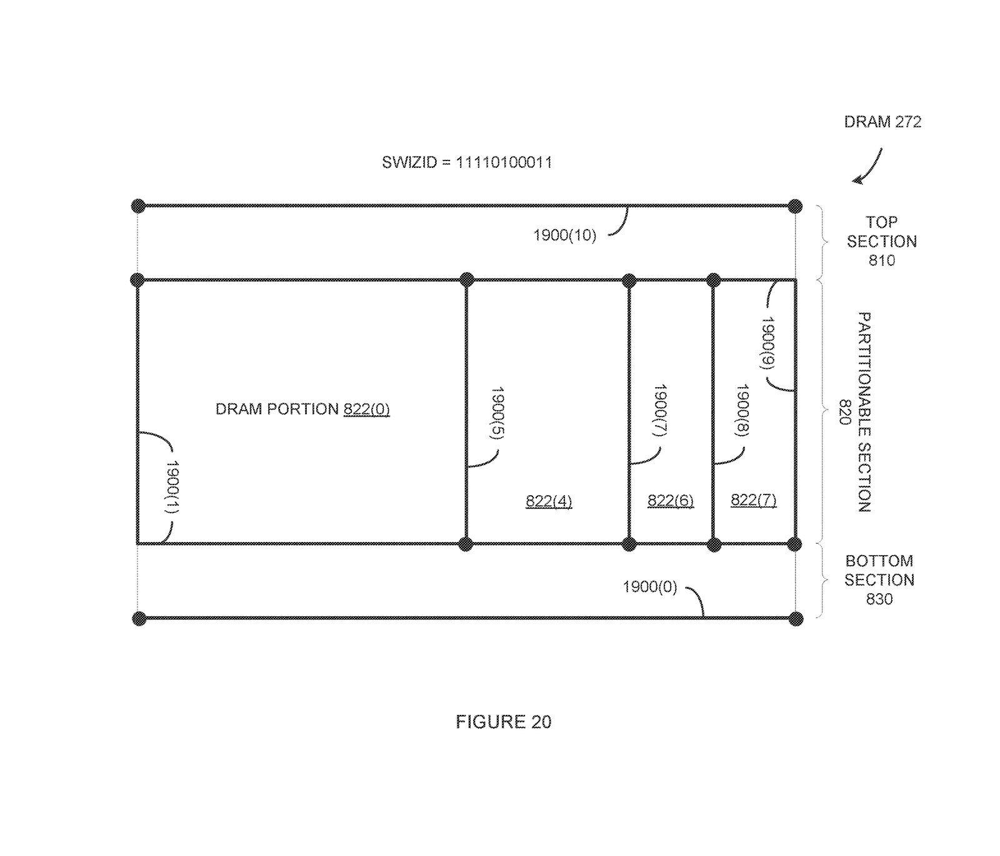
1.5 MMU + AMAP：地址转换与故障隔离
访问路径：SMC engine 发出的地址经 MMU 1600 落到 1D SPA space 850，再由 AMAP 2110 把 partitionable 地址 swizzle 到本分区 L2 slice 组、进而落到对应 DRAM portion。由于 swizzle 的散布范围被 configuration swizID 限定在分区内部，每个分区把自己的 DRAM portion 看作一段连续的线性物理地址，而物理上它分散在本分区的所有 L2 slice / DRAM 上 —— 隔离与带宽利用兼得。越界访问（FIG. 22 中 2210）会被 MMU 拦截并报 fault 2220。
故障隔离：每个 SMC engine 使用从 0 开始的本地 VASID 1500；MMU 1600 维护本地→全局 VASID 1510 的映射。某引擎出错时产生 local fault identifier 1610，MMU 翻译成 global fault identifier 1620 上报 guest OS / hypervisor，只复位出错的引擎，其余引擎不受干扰。又因为所有引擎的本地编号体系一致（都从 0 开始），context 可以在不同 SMC engine、甚至不同 PPU 之间迁移而不改代码 —— 迁移时用"soft floorsweeping"让目标分区模拟源分区的资源缺口，保证 QoS 一致。
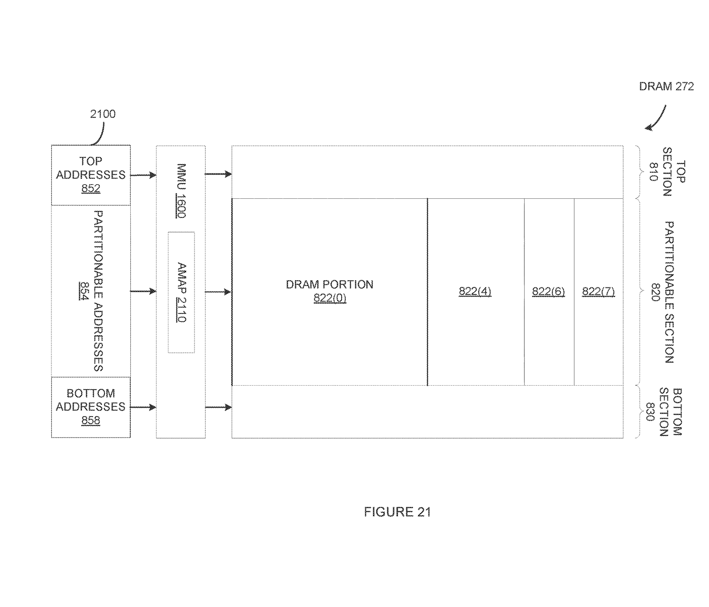
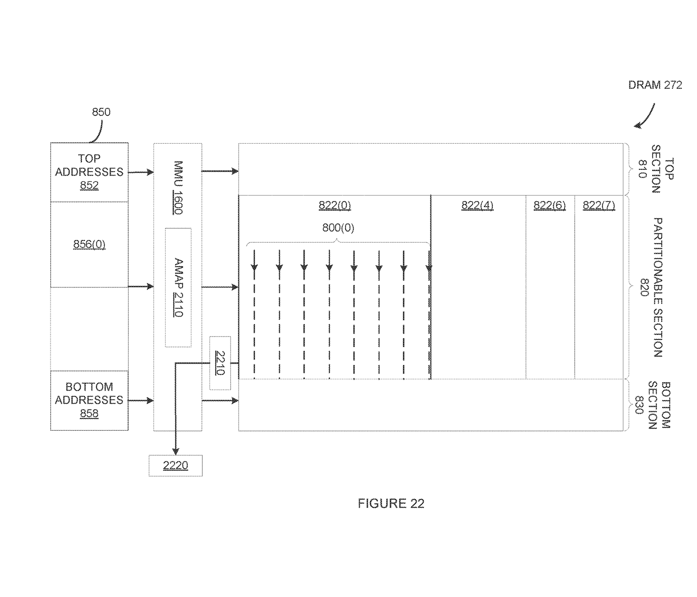
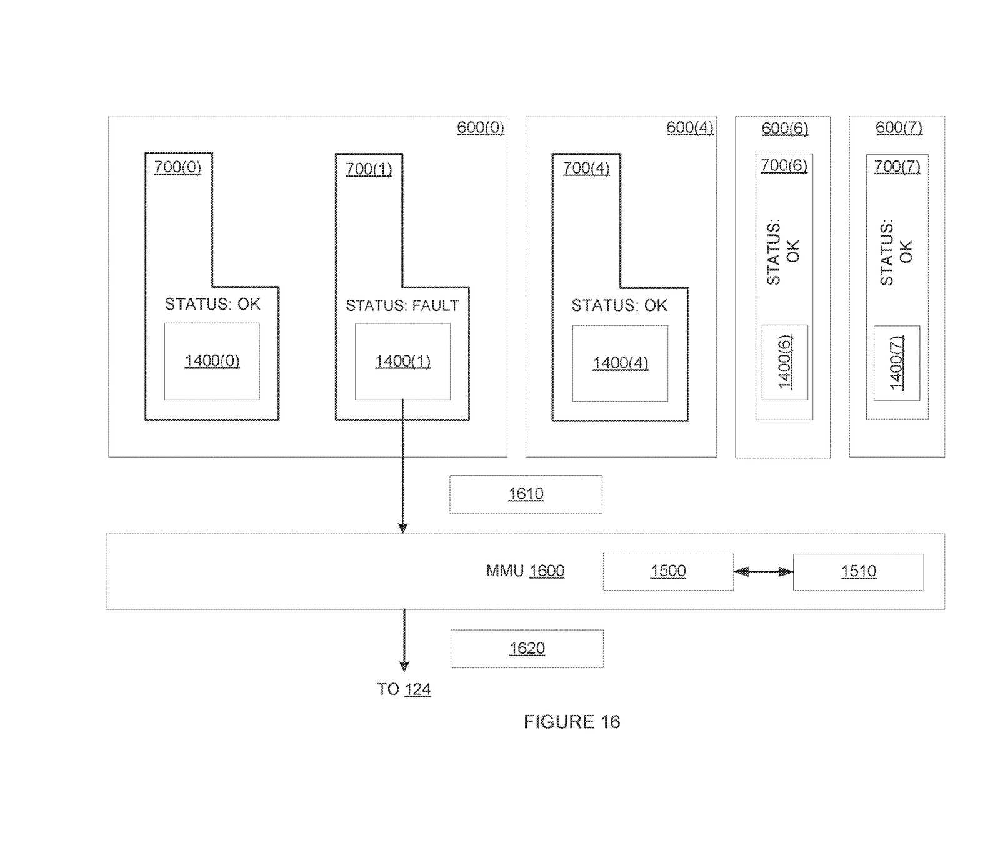
1.6 其余技术要点（速览）
- 资源分配（FIG. 13）：PCE（copy engine）等充足资源静态绑定到 slice；decoder 等稀缺资源动态共享，并配性能监视器做负载均衡。
- 带宽配额：分区按 slice 占比获得内存带宽份额（4/8 slice = 1/2 带宽），由分配相应比例 L2 slice + throttle counter 840 实现。
- time-slicing（FIG. 25–30B）：SMC engine 可在多个 context / VM 间时分复用；VM 级切换建议整分区同步切出切入（因共享 L2）。
- floorsweeping 容错：某 slice 有坏 GPC 时，hypervisor 动态禁用不可行的 partition option / swizID（FIG. 17、FIG. 18 流程）。
- 权限模型（FIG. 9/10）：admin 在 trust boundary 之下"create partition"，guest 在 VM 内"configure partition"（配 SMC engine）；guest 权限只覆盖自己的分区。也支持 bare-metal（无 hypervisor，host OS 直接配置）与容器场景（一个 Docker 容器 ≈ 一个 PPU partition）。
- PRI 地址空间（FIG. 31/32）：BAR0 → 特权寄存器空间的映射按 sys pipe 重映射，支持向多分区的寄存器广播。
- 性能监控与功耗（FIG. 33–39）：性能计数器多路复用与聚合、按分区的功耗/频率管理。
2. US10909033B1：高效内存分区技术（Strided / Partition 混合地址映射）
2.1 要解决的问题
一颗 GPU 被多个客户（应用/租户）共享时，显存地址空间要同时支持两类分配：
- Strided memory space（公共区域）：地址条带化地散布到全部内存器件上，带宽利用率最高；
- Partition memory space（客户私有区域）：地址只散布到一部分内存器件（垂直切分），保证客户间资源隔离。
麻烦在于映射换算（线性地址 → 器件内位置地址）：换算要简单，单元尺寸最好取 2 的幂、且是"器件数 × 页"的整数倍。但现实中 ① 客户申请的 strided 空间大小任意，不落在干净边界上；② 内存器件数量 D 可能不是 2 的幂（如 12 颗）；③ swizzle/hash 会让地址非线性散布。若简单地在 strided 与 partition 之间留一圈"黑名单"缓冲带（blacklist），vMMU 大页粒度下会浪费大量显存。
2.2 核心思想：common boundary + 零头借位
设 strided 空间的申请上界为 Ballocated（allocation boundary 103），它通常不"干净"。专利的做法：
- 找到 Ballocated 之下最近的 common boundary 101（Bcommon） —— 该边界在每个器件中的位置地址相同（= MMU 页整数倍 × 器件数 D 的整数倍），是天然无别名的分界线；
- Bcommon 以下的"大部分"（most of）strided 空间 105：按 strided 格式正常条带化到全部器件 —— 换算简单；
- Bcommon 与 Ballocated 之间的"零头"（remainder）112：不再条带化，而是按比例拆进各 partition 空间的顶部（remainder locations 111A/111B），并按各 partition 自己的格式（swizzle/hash）映射；
- 各 partition 空间的分配起点从 Ballocated 下移到 Bcommon，并把容量各加大 F/2（F = 零头大小），边界全部落在 common boundary 上（Bcommon、Bcommon+FirstPartitionSize+F/2、maximum）。
效果：所有真实边界都是 common boundary，缓冲带（buffer region）被压缩到最小甚至为零；strided 与 partition 空间之间不存在别名；换算只对"零头"这一小段需要特判。
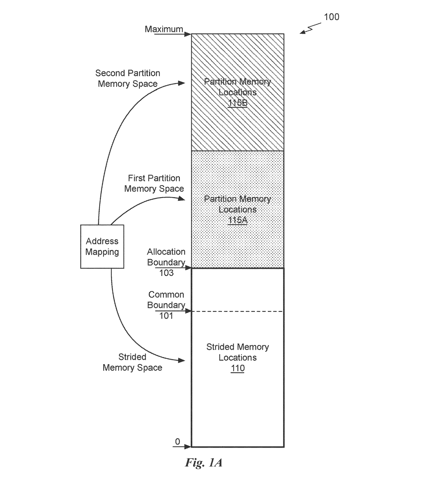
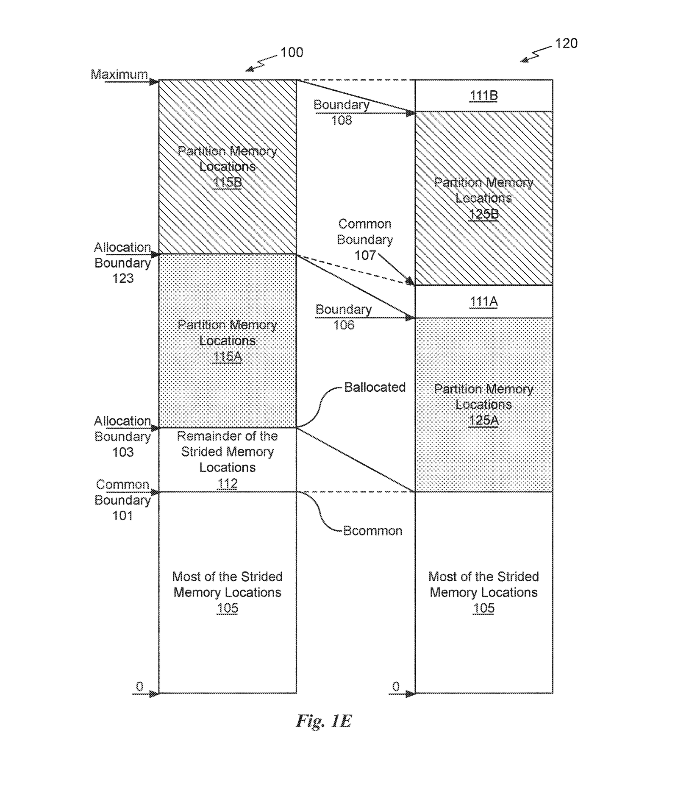
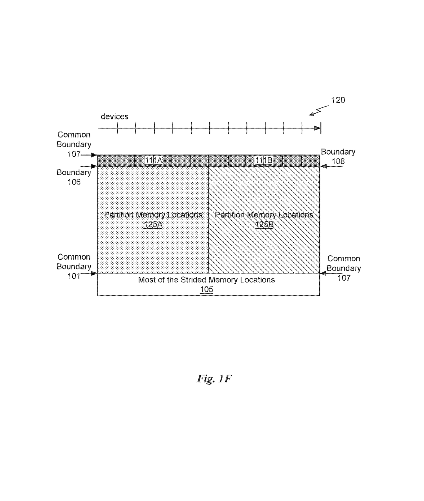
2.3 与处理资源的联动、映射单元与流程
- 资源联动（FIG. 1I/2A）：partition 不只切内存 —— 每个 partition memory space 绑定一组处理资源（uGPU0/uGPU1、L2 资源 170、处理资源 160）。分区容量可以是 1、1/2、1/4、3/4、1/8…等任意组合（resource 240–254），每个分区有标识符，决定其映射格式。
- Address Mapping Unit 255（FIG. 2B）：三级结构 —— Virtual-to-Physical Translation Unit 260 → Resource Identification Unit 265（由地址识别属于哪个 strided/partition 空间，给出 identifier）→ Physical Address Mapping Unit 270（按该空间的格式计算 location address）。
- 映射流程（FIG. 2C）：收到地址 → 判断是否 strided 空间：否则映射到 partition 的第三位置子集（两 common boundary 之间）；是则再判是否在零头内：零头内按"第二公共边界对齐的第二子集"计算，否则按"第一公共边界对齐的第一子集"计算。
- 格式（format）：每个空间可指定自己的 swizzle/hash；common boundary 的定义保证了任意格式下都不会跨界别名。
- 第二 strided 空间：partition 里富余的位置还能再容纳第二个 strided 空间的零头（FIG. 1H），进一步榨干碎片。
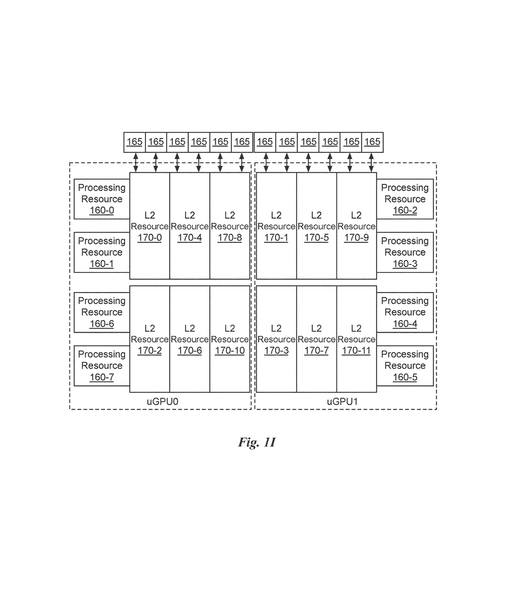
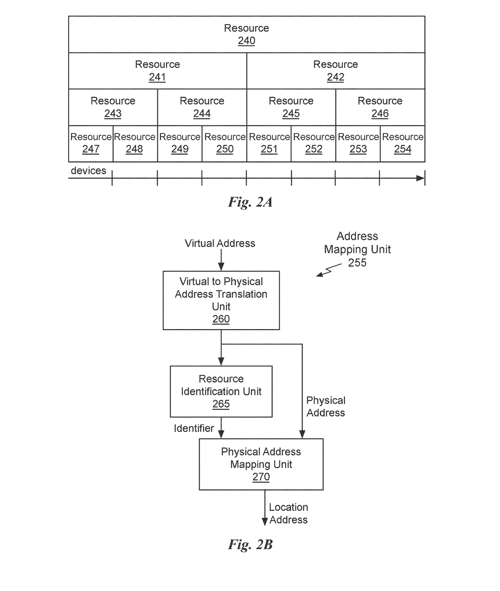
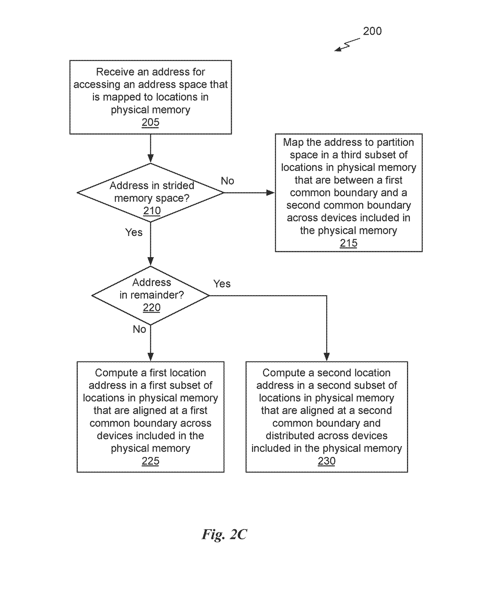
3. US20250078199A1：统一内存 GPU 的 Localized Mode（地址 locality）
3.1 要解决的问题：一颗"逻辑 GPU"其实是两颗 die
NVIDIA 的高端 GPU 走向多 die（chiplet）封装：一个 uGPU（micro-GPU）die 自带 4 个 GPC、自己的 XBAR、自己的 L2 cache（LTC）和自己的 HBM 栈；两个 uGPU 之间用 die-to-die 互连（C2C）拼成一颗对软件可见的"统一内存 GPU"。问题随之而来：
- 跨 uGPU 的内存访问要走 C2C，带宽减半、延迟变高；
- 同一份数据可能在两个 uGPU 的 L2 里各缓存一份，浪费容量；
- 而传统地址映射把数据按细粒度 stride 交织（swizzle）到所有 uGPU 上 —— 任何 CTA 访问的数据都几乎必然有一半在对面的 die 上。
背景上，这篇专利明确站在 CUDA Unified Memory（统一虚拟地址）的语境里：系统已经能给 CPU/GPU 提供统一地址空间、按页迁移数据，但它缺少的是"把数据主动钉在离计算最近的 die 上"的手段。
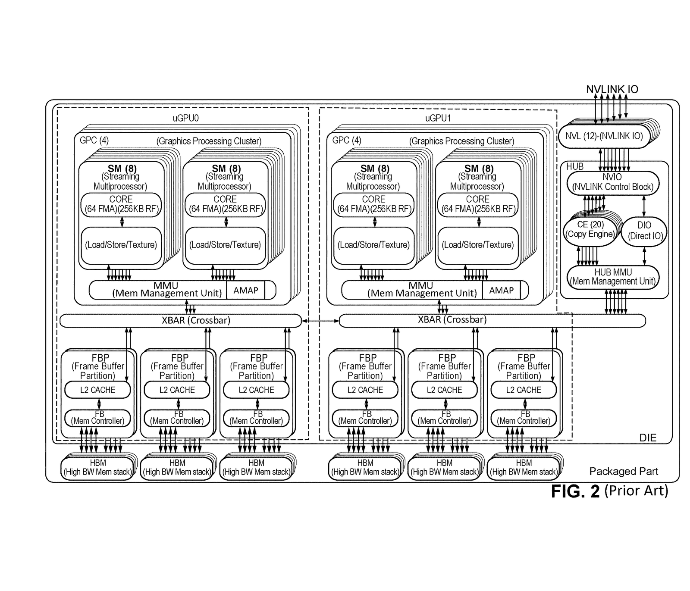
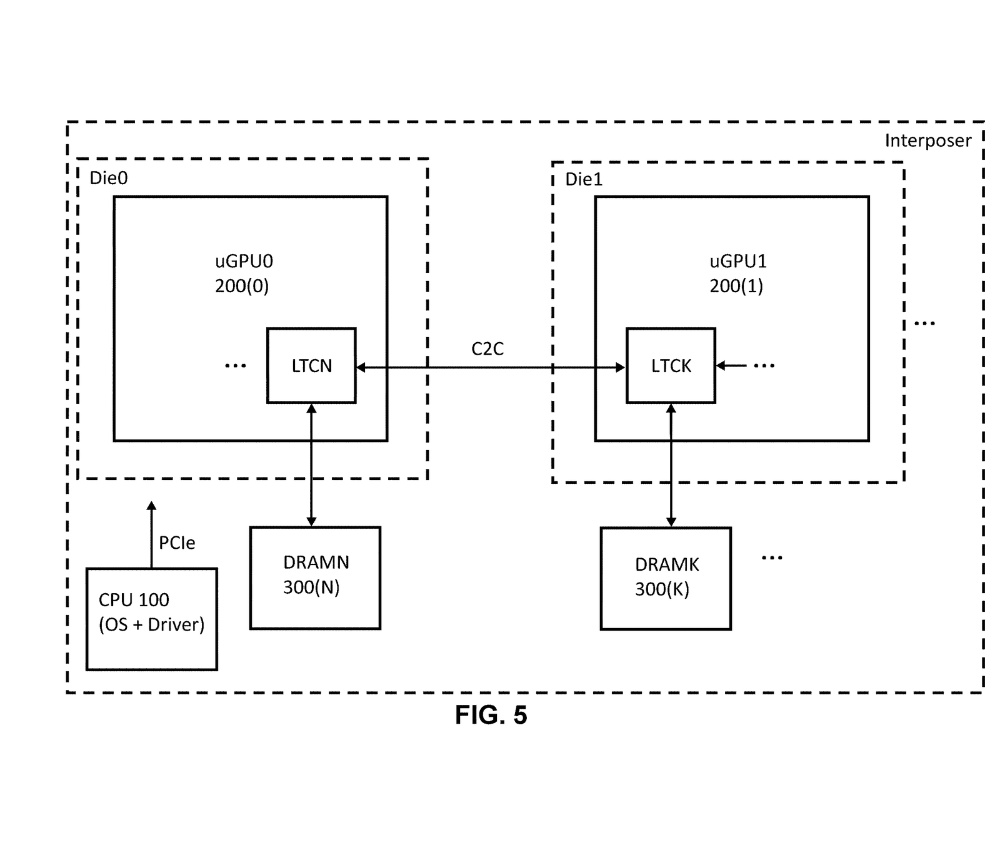
3.2 方案双支柱：GPC affinity ＋ Localized AMAP
专利的方案有两条腿，缺一不可：
- 计算侧的 locality：用 GPC affinity mask 把 CTA（线程块）只分发到某个 uGPU 的 GPC 上（由 CWD 分发单元执行），保证"计算在哪个 die"是可控的；
- 数据侧的 locality：在 AMAP（地址映射）层新增一种 localized 映射视图，把指定地址范围整体放到某一个 uGPU 的内存上，保证"数据在哪个 die"也是可控的。
两者配合：affinity mask 让 CTA 留在 uGPU0，localized 映射让它访问的数据也留在 uGPU0，跨 die 流量被压到最小。
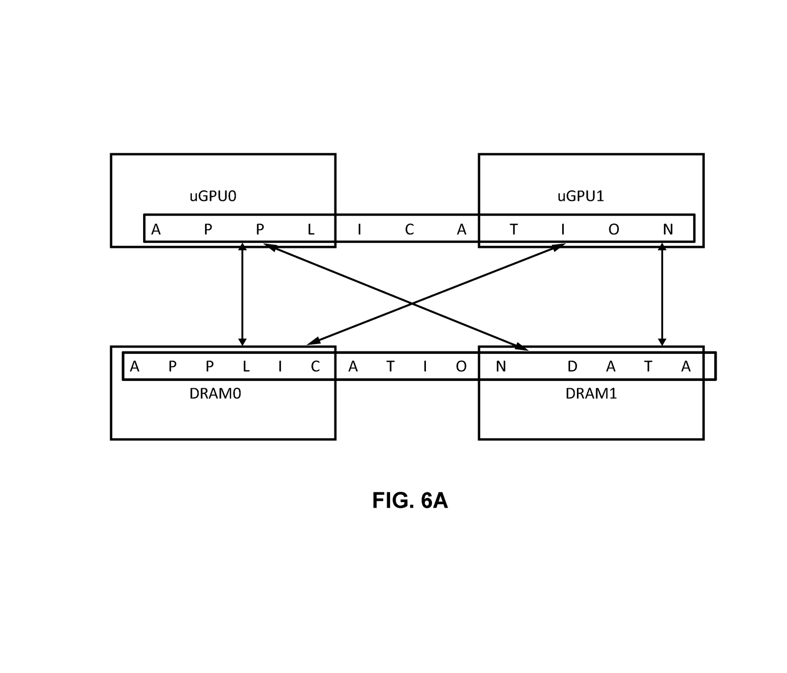
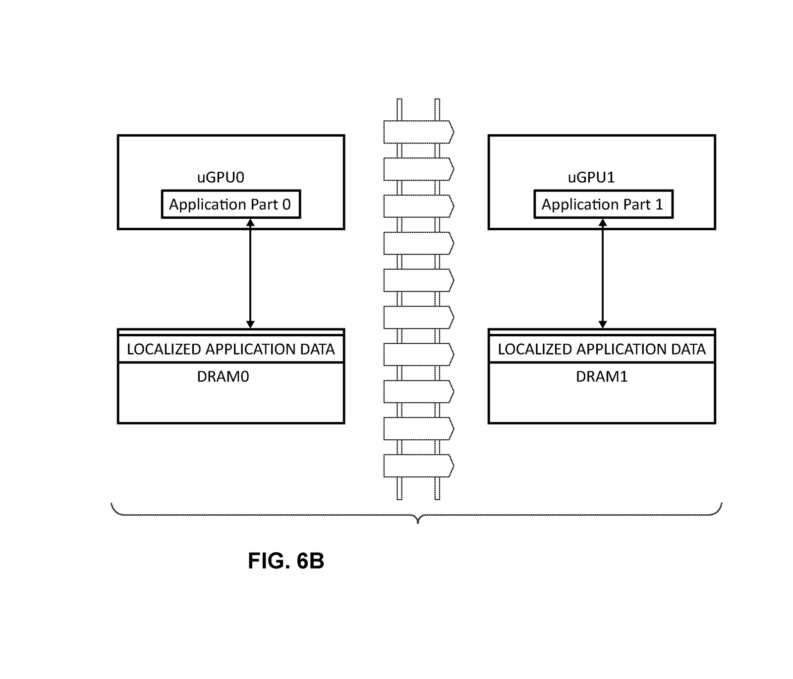
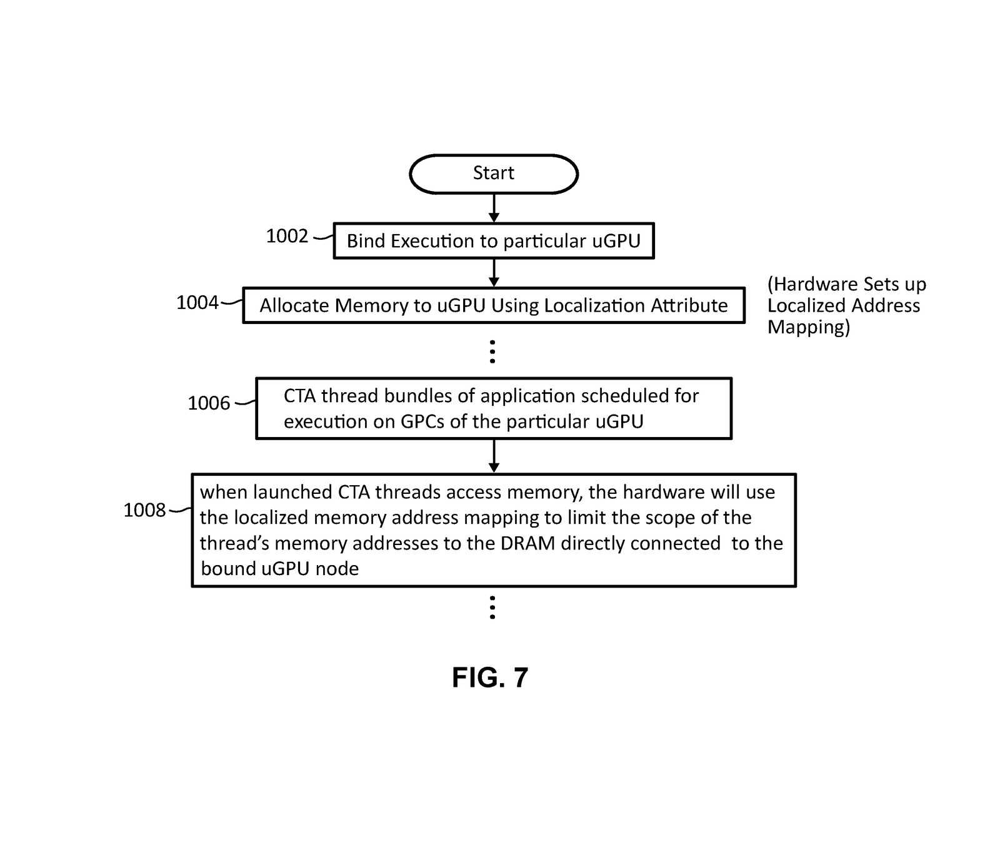
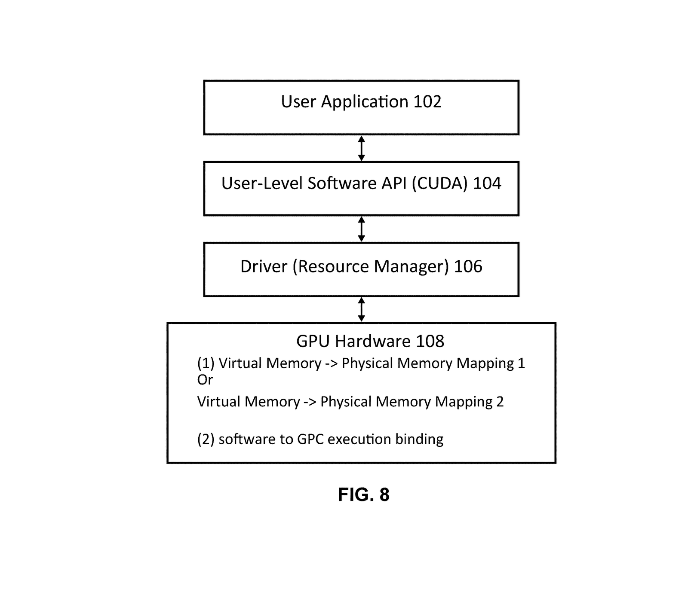
3.3 核心机制：PTE 里的一个 LOCALIZATION_MODE_BIT
这篇专利最漂亮的设计是：不新增页表结构，只在 PTE（页表项）的地址域高位里借 1 个 bit，按 64MB 对齐的 chunk 粒度声明这段地址的映射模式：
- bit = 0（传统模式）：64MB chunk 内部按细粒度 stride 交织（swizzle）散布到两个 uGPU（FIG.9A）—— 面向带宽最优；
- bit = 1（localized 模式）：每个 64MB chunk 的前 32MB 映射到 uGPU0、后 32MB 映射到 uGPU1（FIG.9B），并且不做 swizzle，让软件能直接从地址算出数据归属哪个 die —— 面向 locality 最优。
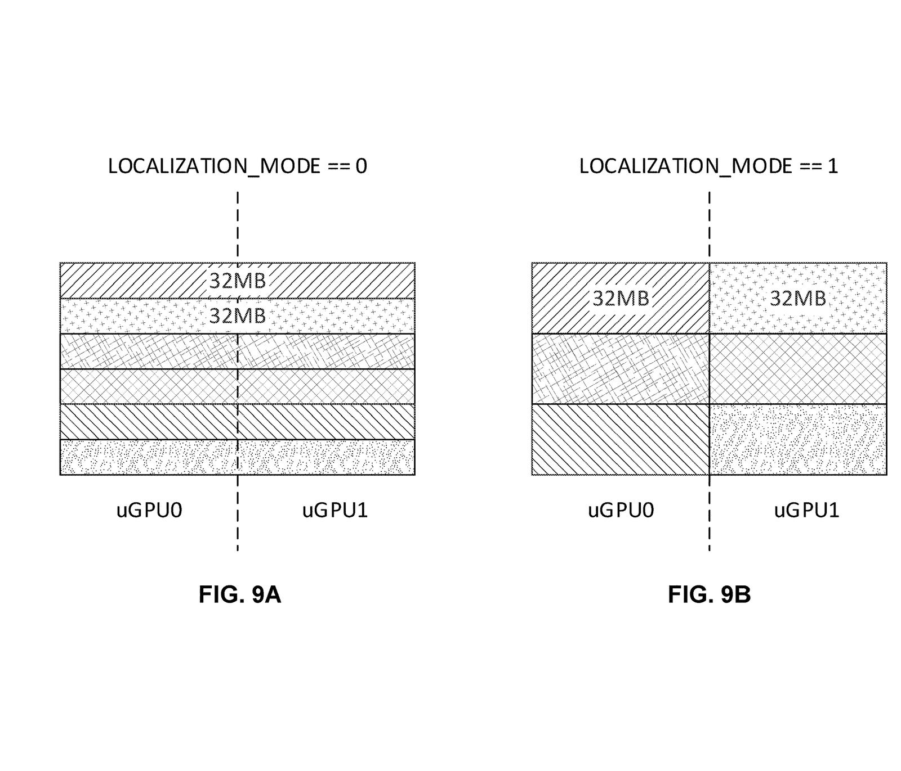
3.4 工程细节（容易被忽略但很关键）
| 细节 | 做法与原因 |
|---|---|
| RM 子分配粒度 | localized 模式下按 32MB"半块"分配，与映射边界对齐，避免一个分配跨两个 die |
| CPU 访问限制 | CPU 不能访问 localized 内存（只能 prefetch、不能修改）—— 因为 localized 地址的解释依赖 GPU 侧 AMAP，放开 CPU 写会破坏一致性 |
| r2p 反向映射 | reverse-to-physical 查询永远按 non-localized 解释，保证一致性 probe（snoop）结果与模式无关、始终正确 |
| 硬件改动 | MMU、FLA、XAL 各增加 1 bit 的模式传递与解释逻辑，改动极小 |
| 软件接口 | 新增 CUDA API：cudaMalloc 族增加 localization 属性；与既有的 GPC affinity（US8253749 族）组合使用 |
4. US20260227917A1：动态 Memory Bank Cluster（bank 级 locality ＋ 功耗）
4.1 要解决的问题：顺序访问太慢，全 bank 并发又太费电
AI 加速器 SoC 上有一大块片上存储（global scratchpad / weight memory，分成许多 bank）。两种极端都不好：
- 对一块 buffer 纯顺序访问：带宽被单个 bank 卡死，AI 加速器吃不饱；
- 所有 buffer 都铺满全部 bank（交织）：带宽够，但每次访问点亮全部 bank，功耗爆炸；而近存处理器（near-memory processor）这类部件其实只需要中等带宽。
不同 tensor、不同层、不同执行部件的带宽需求差异很大（4bit vs 8bit 精度、AI 加速器 vs 近存处理器），固定的交织策略不可能对所有人都好。
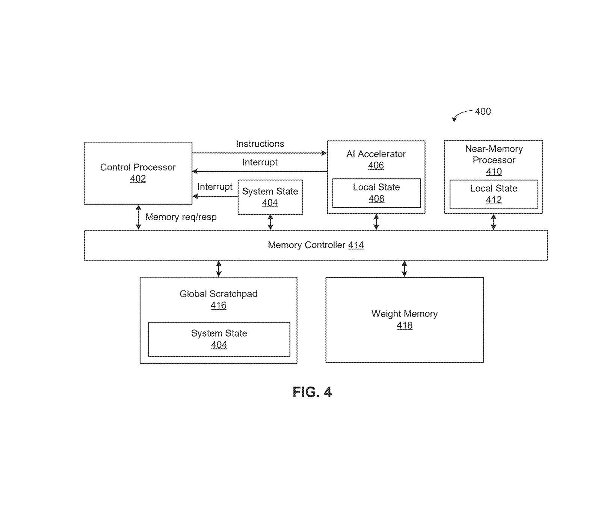
4.2 核心概念：bank cluster size 随请求走
机制一句话：每个读写请求自己携带一个 bank cluster size（1 / 2 / 4），地址映射按这个 size 动态解释：
- cluster 内部的 bank 之间做交织（并发、带宽）；
- cluster 之间做顺序排布（一个 cluster 满了再到下一个，省电、可局部性管理）。
于是同一块物理存储，对不同 tensor 呈现不同的"宽度"：权重要带宽就 size=4，标量/控制数据要省电就 size=1。
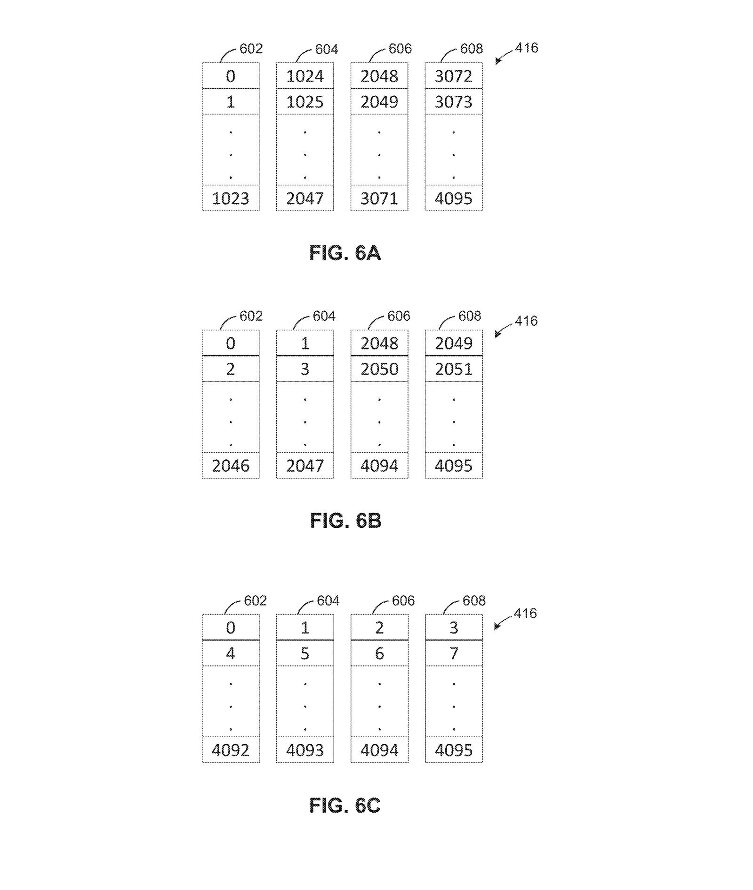
4.3 编译器驱动的分配策略
cluster size 不是运行时猜的，而是编译器在编译期（FIG.14 流程）为每个 tensor 决定的，依据包括：
- 计算类型：GEMM / attention / shuffle / transpose 的访问模式不同；
- 执行部件：AI 加速器要满带宽（大 cluster），近存处理器需求低（小 cluster）；
- 数据精度：4bit 与 8bit tensor 每字节信息量不同，影响 bank 排布（FIG.7 / FIG.8 分别给出 4b、8b 张量的分配实例，如 PQK 张量、HWC 输入）。
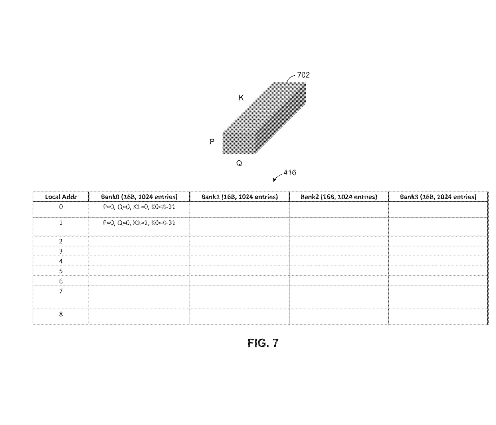
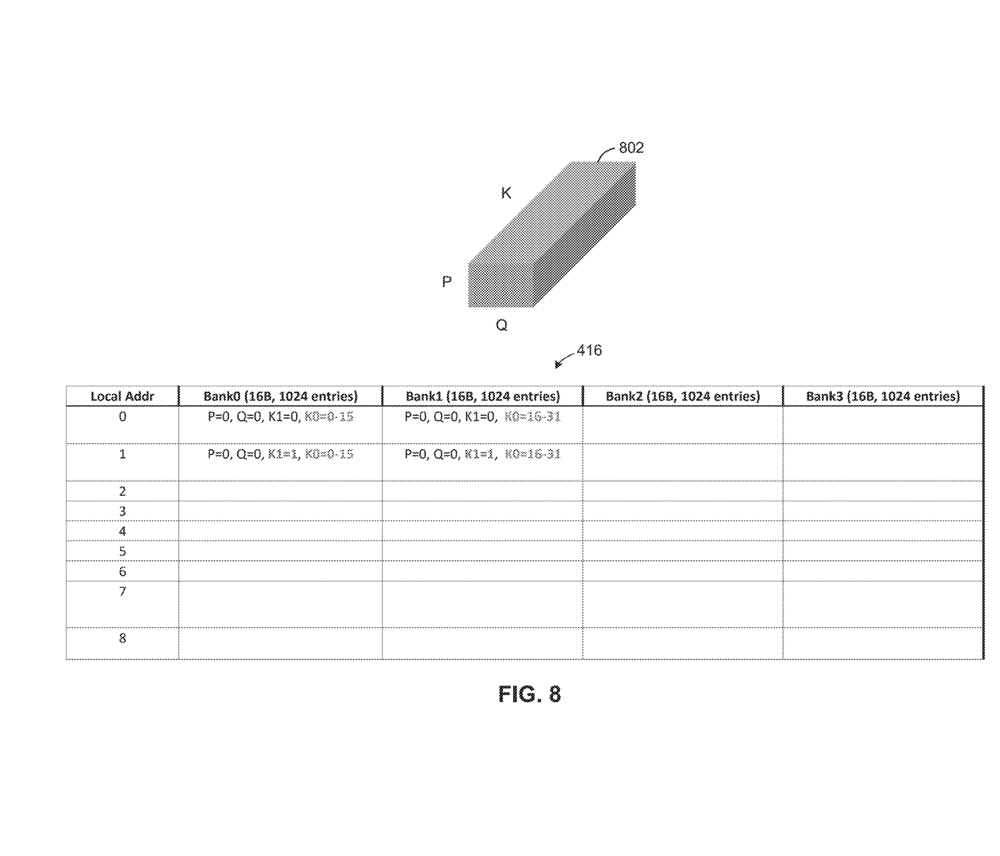
两个典型算子的 bank 编排：
- Shuffle（FIG.12）：利用 Bank3 作为中间存储完成数据重排，避免额外 buffer；
- Transpose（FIG.13）：把 P→Q→K 布局变成 B→K→C，通过 cluster 映射让转置后的访问仍然 bank 友好。
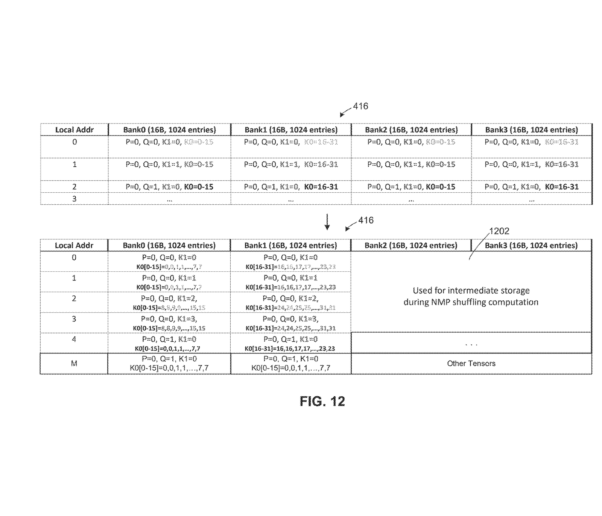
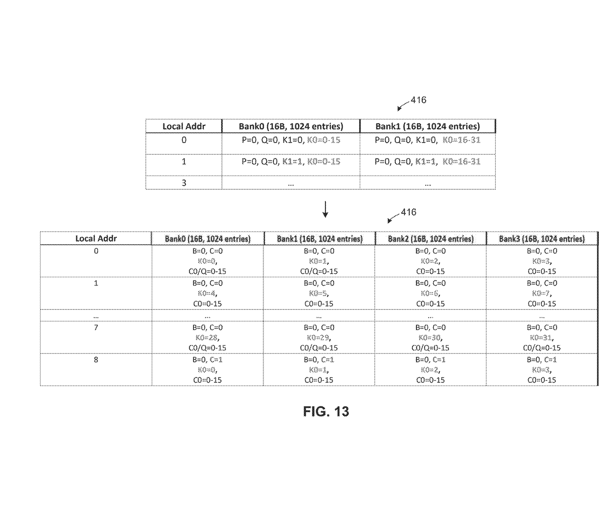
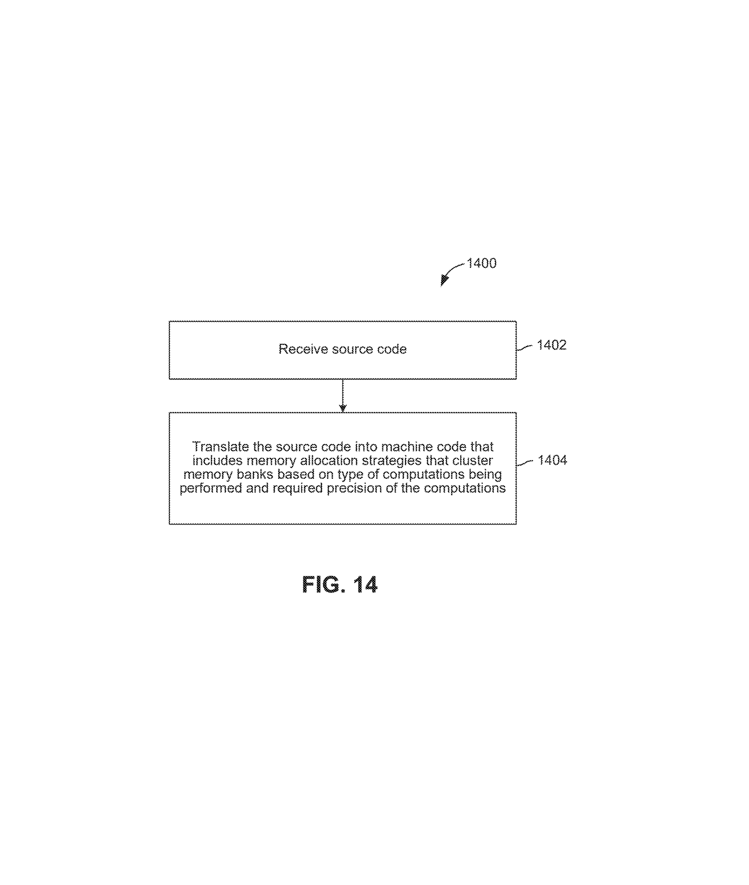
4.4 执行期：用不到的 bank 直接休眠
control processor 按当前活跃 tensor 的 cluster 占用情况，把没被任何活跃 cluster 用到的 bank 置为 retention / idle 低功耗态，需要时再唤醒 —— 这是 Y02D10（节能计算）分类的由来。地址翻译侧，FIG.16 给出 VA→PA 的完整流程：请求携带的 cluster size 参与物理 bank 号与 bank 内偏移的生成。
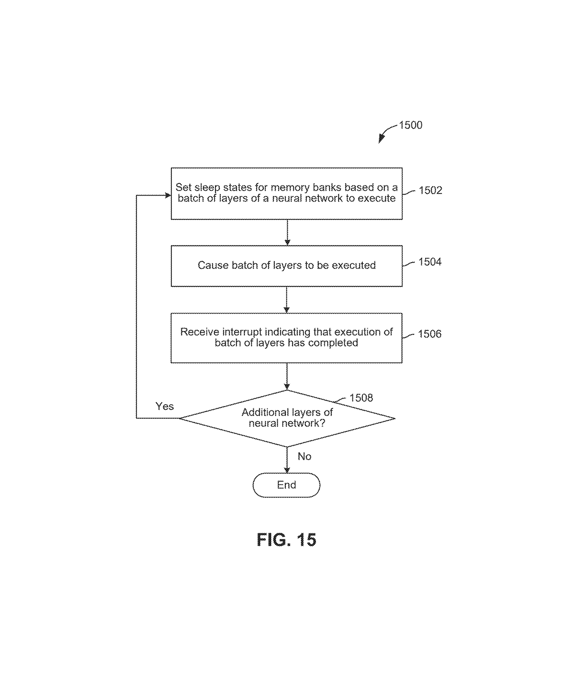
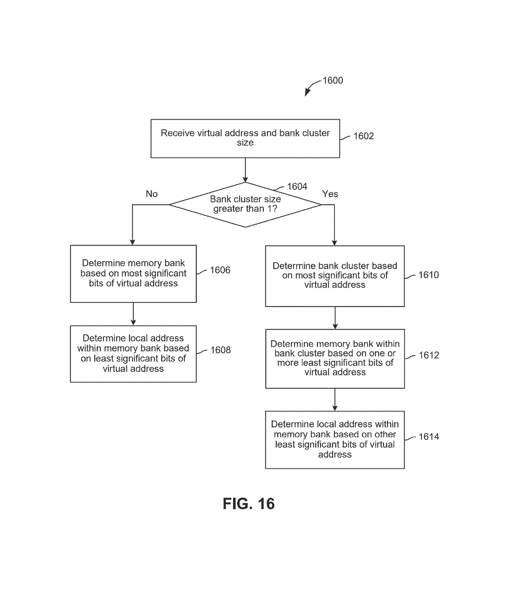
5. 四篇对比与综合分析
5.1 总对比表
| US10909033B1 内存分区映射 | US20210157651A1 MIG 系统 | US20250078199A1 uGPU Localized Mode | US20260227917A1 动态 Bank Cluster | |
|---|---|---|---|---|
| 核心目标 | 切得干净：任意大小分区＋跨器件条带化共存 | 隔得彻底：一颗 GPU 变多颗，互不干扰 | 贴得够近：数据与计算锁在同一 die | 宽省电两相宜：带宽/功耗按 tensor 定制 |
| 作用层级 | DRAM 器件 / L2 slice 映射 | 整卡系统（SM/L2/DRAM/引擎） | 多 die 间（uGPU 级） | 片上 SRAM bank 级 |
| 最小粒度 | common boundary 对齐的块 | DRAM 三段＋L2 slice 子集 | 64MB chunk（32MB 子分配） | 单个访存请求 |
| 模式载体 | AMU 映射表 | 11-bit swizID（位 OR 合成） | PTE 高位 1 bit（LOCALIZATION_MODE） | 请求携带的 cluster size 字段 |
| 控制者 | 驱动 / 固件配置 | Hypervisor / 驱动 | CUDA API ＋ RM 运行时 | 编译器（编译期决策） |
| 隔离 / locality | 为隔离提供映射数学 | 隔离（多租户 QoS） | locality（性能） | locality（性能＋功耗） |
| 硬件改动 | AMAP/AMU 映射逻辑 | AMAP＋VASID＋throttle＋PRI 等系统级 | MMU/FLA/XAL 各加 1 bit | 存储控制器＋bank 功耗门控 |
5.2 机制栈：四篇专利各自卡在哪一层
5.3 演进脉络与谱系
- 映射数学先行（033，2017 前后申请）：先解决"任意大小分区＋条带化共存、边界干净、支持非 2 幂器件数"这个纯几何问题；
- 系统隔离落地（651，MIG）：把映射能力包装成多租户系统 —— 两级分区、swizID 位 OR 合成配置、AMAP 限制散布范围、VASID/PRI 故障隔离、throttle 限带宽、soft floorsweeping 迁移；
- locality 反哺（199）：多 die 时代，交织带来的带宽收益被 C2C 惩罚抵消，于是同一个 AMAP 框架里长出"反向"能力 —— 不交织、钉在本地。发明人 Kun Fang 同时出现在 033 与 199 上，199 引用的 swizzle 专利族也与 033 同源，谱系清晰；
- 粒度收束到 bank＋功耗（917）：同一思想进入片上存储，决策权上移到编译器，目标函数从纯性能变成性能/功耗联合。
5.4 回到"MIG DDR 地址隔离 ＆ 地址 locality"
MIG DDR 地址隔离 = 651 的系统机制 × 033 的映射数学。651 负责"谁配、配多大、故障怎么挡、带宽怎么限"（PPU/SMC 两级分区、本地/全局 VASID、fault ID 翻译、throttle counter）；033 负责"切出来的每个分区地址怎么映射才不互相踩踏、还能与非 2 幂器件数和条带化共存"（common boundary、零头按比例借位、黑名单缓冲最小化）。651 的 AMAP 用分区自身 swizID 把地址只散布到本分区 L2 slice，同时解决隔离与缓存 camping，是两者咬合的接口。
地址 locality = 199（uGPU 级）＋ 917（bank 级）。199 把 locality 做进统一地址空间：PTE 借 1 bit，64MB chunk 逐块在"带宽交织"与"本地钉住"之间选择，配合 GPC affinity 让计算与数据同 die；917 把 locality 做进片上 SRAM：cluster 内交织保带宽、cluster 间顺序省电，编译器按 tensor 定宽度，闲置 bank 直接休眠。
贯穿四篇的设计启示：① 把模式当地址属性编码（swizID 高位、PTE 高位、请求的 size 字段），让路径上每一级硬件"只看地址就知道怎么做"，无需额外带外协商；② swizzle 不只是性能技巧，反过来限定散布范围就是隔离工具；③ 边界对齐（common boundary / 64MB chunk / cluster 边界）是一切动态重配的前提；④ 软件可编程映射永远优于改物理互连 —— 四篇专利没有一篇需要改动存储器件本身。